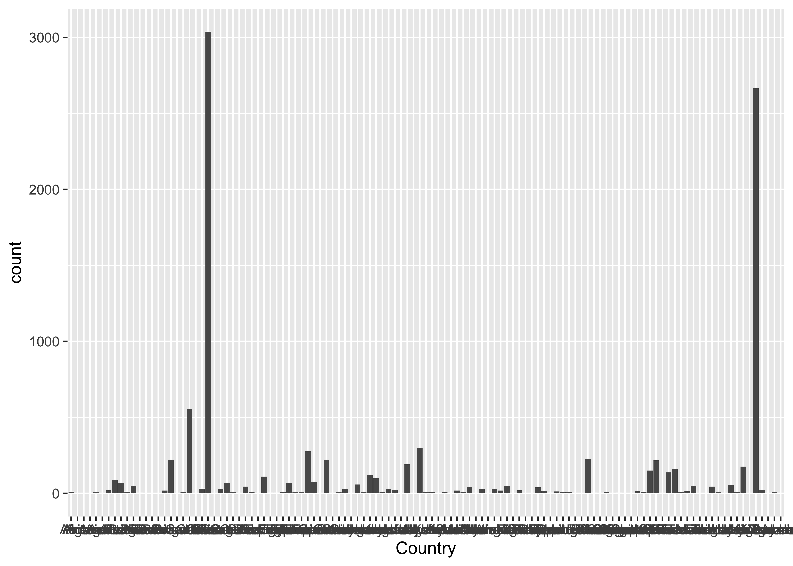

## ── Attaching core tidyverse packages ───────────────────────────────────────────────── tidyverse 2.0.0 ──
## ✔ dplyr 1.1.4 ✔ readr 2.1.4
## ✔ forcats 1.0.0 ✔ stringr 1.5.1
## ✔ ggplot2 3.5.0 ✔ tibble 3.2.1
## ✔ lubridate 1.9.3 ✔ tidyr 1.3.0
## ✔ purrr 1.0.2
## ── Conflicts ─────────────────────────────────────────────────────────────────── tidyverse_conflicts() ──
## ✖ dplyr::filter() masks stats::filter()
## ✖ dplyr::lag() masks stats::lag()
## ℹ Use the conflicted package (<http://conflicted.r-lib.org/>) to force all conflicts to become errors## Linking to GEOS 3.11.0, GDAL 3.5.3, PROJ 9.1.0; sf_use_s2() is TRUE## Record_number Entry_date Study_number Author Duplicate_record
## Min. : 1 Length:10366 Min. : 14 Length:10366 Length:10366
## 1st Qu.: 2612 Class :character 1st Qu.: 3795 Class :character Class :character
## Median : 5216 Mode :character Median : 6617 Mode :character Mode :character
## Mean : 5218 Mean : 6667
## 3rd Qu.: 7829 3rd Qu.:10069
## Max. :10429 Max. :12000
##
## Quality_flag Contributor Country Region Site_name
## Length:10366 Length:10366 Length:10366 Length:10366 Length:10366
## Class :character Class :character Class :character Class :character Class :character
## Mode :character Mode :character Mode :character Mode :character Mode :character
##
##
##
##
## Site_ID Study_midyear YearsOfData Latitude Longitude Elevation
## Length:10366 Min. :1961 Min. : 0.500 Min. :-78.02 Min. :-163.71 Min. : -9
## Class :character 1st Qu.:2002 1st Qu.: 1.000 1st Qu.: 32.42 1st Qu.: -79.10 1st Qu.: 219
## Mode :character Median :2007 Median : 1.000 Median : 40.60 Median : 13.72 Median : 500
## Mean :2005 Mean : 1.234 Mean : 37.38 Mean : 16.08 Mean : 886
## 3rd Qu.:2011 3rd Qu.: 1.000 3rd Qu.: 47.12 3rd Qu.: 111.83 3rd Qu.:1300
## Max. :2017 Max. :12.000 Max. : 81.80 Max. : 175.90 Max. :5895
## NA's :183 NA's :182 NA's :381 NA's :383 NA's :4552
## Manipulation Manipulation_level Age_ecosystem Age_disturbance Species
## Length:10366 Length:10366 Min. : 0.00 Min. : 0.00 Length:10366
## Class :character Class :character 1st Qu.: 9.00 1st Qu.: 1.00 Class :character
## Mode :character Mode :character Median : 25.00 Median : 18.00 Mode :character
## Mean : 42.03 Mean : 39.23
## 3rd Qu.: 50.00 3rd Qu.: 55.00
## Max. :500.00 Max. :500.00
## NA's :9202 NA's :6023
## Biome Ecosystem_type Ecosystem_state Leaf_habit Stage
## Length:10366 Length:10366 Length:10366 Length:10366 Length:10366
## Class :character Class :character Class :character Class :character Class :character
## Mode :character Mode :character Mode :character Mode :character Mode :character
##
##
##
##
## Soil_type Soil_drainage Soil_BD Soil_CN Soil_sand Soil_silt
## Length:10366 Length:10366 Min. :0.050 Min. : 0.23 Min. : 0.60 Min. : 0.14
## Class :character Class :character 1st Qu.:0.890 1st Qu.: 10.30 1st Qu.:26.32 1st Qu.:20.00
## Mode :character Mode :character Median :1.180 Median : 13.54 Median :51.00 Median :30.40
## Mean :1.094 Mean : 16.61 Mean :47.13 Mean :32.69
## 3rd Qu.:1.340 3rd Qu.: 19.00 3rd Qu.:64.00 3rd Qu.:45.00
## Max. :9.300 Max. :113.20 Max. :99.30 Max. :85.00
## NA's :7718 NA's :8096 NA's :8746 NA's :8759
## Soil_clay MAT MAP PET Study_temp Study_precip
## Min. : 0.00 Min. :-19.00 Min. : 10 Min. : 2.3 Min. :-19.50 Min. : 1.0
## 1st Qu.: 9.00 1st Qu.: 4.80 1st Qu.: 511 1st Qu.: 805.0 1st Qu.: 6.10 1st Qu.: 473.0
## Median :17.00 Median : 8.90 Median : 835 Median :1390.0 Median : 9.10 Median : 810.0
## Mean :20.36 Mean : 10.12 Mean :1015 Mean :1423.4 Mean : 10.94 Mean : 942.3
## 3rd Qu.:28.00 3rd Qu.: 15.50 3rd Qu.:1322 3rd Qu.:1935.0 3rd Qu.: 16.07 3rd Qu.:1189.3
## Max. :76.00 Max. : 38.00 Max. :5532 Max. :4770.0 Max. : 45.30 Max. :5900.0
## NA's :8664 NA's :2930 NA's :2241 NA's :9814 NA's :9376 NA's :8985
## Meas_method Collar_height Collar_depth Chamber_area Time_of_day
## Length:10366 Min. : 1.70 Min. : 0.000 Min. : 13.2 Length:10366
## Class :character 1st Qu.: 5.00 1st Qu.: 2.000 1st Qu.: 80.0 Class :character
## Mode :character Median : 10.00 Median : 3.000 Median : 314.0 Mode :character
## Mean : 14.38 Mean : 4.461 Mean : 506.8
## 3rd Qu.: 20.00 3rd Qu.: 5.000 3rd Qu.: 490.6
## Max. :100.00 Max. :100.000 Max. :11304.0
## NA's :5858 NA's :4006 NA's :2824
## Meas_interval Annual_coverage Partition_method Rs_annual Rs_annual_err
## Min. : 0.01 Min. :0.0100 Length:10366 Min. : -200.0 Min. : 0.0
## 1st Qu.: 10.00 1st Qu.:0.5000 Class :character 1st Qu.: 471.0 1st Qu.: 37.0
## Median : 20.00 Median :1.0000 Mode :character Median : 732.0 Median : 68.0
## Mean : 21.99 Mean :0.7651 Mean : 854.6 Mean : 141.9
## 3rd Qu.: 30.00 3rd Qu.:1.0000 3rd Qu.: 1075.0 3rd Qu.: 136.0
## Max. :365.00 Max. :1.0000 Max. :23046.0 Max. :3039.2
## NA's :2821 NA's :2165 NA's :4625 NA's :7975
## Rs_interann_err Rlitter_annual Ra_annual Rh_annual RC_annual Rs_spring
## Min. : 0.00 Min. : 0.0 Min. : -16.0 Min. :-116.4 Min. :-0.040 Min. : 0.310
## 1st Qu.: 25.00 1st Qu.:110.0 1st Qu.: 152.8 1st Qu.: 280.0 1st Qu.: 0.280 1st Qu.: 0.671
## Median : 62.00 Median :158.0 Median : 275.9 Median : 422.7 Median : 0.390 Median : 2.190
## Mean : 90.44 Mean :198.5 Mean : 361.7 Mean : 479.3 Mean : 0.406 Mean : 2.239
## 3rd Qu.:122.00 3rd Qu.:260.0 3rd Qu.: 447.4 3rd Qu.: 600.0 3rd Qu.: 0.520 3rd Qu.: 2.900
## Max. :636.00 Max. :949.0 Max. :2280.0 Max. :4150.0 Max. : 1.150 Max. :10.000
## NA's :9245 NA's :10161 NA's :9606 NA's :9316 NA's :9439 NA's :10260
## Rs_summer Rs_autumn Rs_winter Rs_growingseason Rs_wet Rs_dry
## Min. : 0.000 Min. :0.205 Min. : 0.000 Min. : 0.000 Min. : 0.043 Min. : 0.000
## 1st Qu.: 1.025 1st Qu.:0.738 1st Qu.: 0.220 1st Qu.: 1.468 1st Qu.: 1.867 1st Qu.: 1.597
## Median : 2.259 Median :2.060 Median : 0.550 Median : 2.510 Median : 3.170 Median : 2.270
## Mean : 3.429 Mean :2.219 Mean : 0.938 Mean : 3.012 Mean : 3.396 Mean : 2.635
## 3rd Qu.: 4.405 3rd Qu.:2.953 3rd Qu.: 1.160 3rd Qu.: 3.957 3rd Qu.: 4.400 3rd Qu.: 2.933
## Max. :29.500 Max. :7.440 Max. :11.790 Max. :24.110 Max. :12.037 Max. :16.140
## NA's :10046 NA's :10262 NA's :10045 NA's :7699 NA's :10121 NA's :10166
## RC_seasonal RC_season GPP ER NEP NPP
## Min. :0.000 Length:10366 Min. : 0.0 Min. : 78.2 Min. :-1650.0 Min. :-116.8
## 1st Qu.:0.250 Class :character 1st Qu.: 836.5 1st Qu.: 744.0 1st Qu.: -20.5 1st Qu.: 268.0
## Median :0.370 Mode :character Median :1349.5 Median :1018.0 Median : 149.8 Median : 551.0
## Mean :0.393 Mean :1604.8 Mean :1227.8 Mean : 215.4 Mean : 682.7
## 3rd Qu.:0.520 3rd Qu.:2051.8 3rd Qu.:1456.8 3rd Qu.: 374.5 3rd Qu.: 872.8
## Max. :0.940 Max. :7800.0 Max. :8044.0 Max. : 2700.0 Max. :7056.0
## NA's :10099 NA's :9962 NA's :9909 NA's :9663 NA's :9694
## ANPP BNPP NPP_FR TBCA Litter_flux Rootlitter_flux
## Min. : 0.0 Min. : 0.00 Min. : 4.3 Min. : 68.0 Min. : -20.0 Min. : 0.0
## 1st Qu.: 151.0 1st Qu.: 73.38 1st Qu.: 90.0 1st Qu.: 237.8 1st Qu.: 130.8 1st Qu.: 50.0
## Median : 266.1 Median : 180.00 Median :144.0 Median : 583.0 Median : 204.5 Median :117.5
## Mean : 384.5 Mean : 233.45 Mean :168.3 Mean : 647.5 Mean : 247.5 Mean :166.8
## 3rd Qu.: 449.2 3rd Qu.: 282.50 3rd Qu.:211.0 3rd Qu.: 896.0 3rd Qu.: 315.5 3rd Qu.:241.2
## Max. :2560.0 Max. :4203.00 Max. :700.0 Max. :2600.0 Max. :3150.0 Max. :590.0
## NA's :9666 NA's :9940 NA's :10129 NA's :10216 NA's :9313 NA's :10221
## TotDet_flux Ndep LAI BA C_veg_total C_AG
## Min. : 4.3 Min. : 0.100 Min. : 0.000 Min. : 0.0 Min. : 4.0 Min. : 0.0
## 1st Qu.:144.2 1st Qu.: 0.500 1st Qu.: 2.115 1st Qu.: 20.7 1st Qu.: 592.5 1st Qu.: 235.1
## Median :273.0 Median : 0.800 Median : 3.600 Median : 29.2 Median : 2080.9 Median : 1239.0
## Mean :319.8 Mean : 1.709 Mean : 3.870 Mean : 34.5 Mean : 6322.4 Mean : 5446.7
## 3rd Qu.:436.0 3rd Qu.: 2.000 3rd Qu.: 5.300 3rd Qu.: 42.1 3rd Qu.: 8455.0 3rd Qu.: 5128.0
## Max. :885.0 Max. :20.500 Max. :14.900 Max. :385.5 Max. :66800.0 Max. :145200.0
## NA's :10202 NA's :10236 NA's :9471 NA's :9149 NA's :9975 NA's :9340
## C_BG C_CR C_FR C_litter C_soilmineral
## Min. : 4.0 Min. : 0.0 Min. : 0.002 Min. : 0.0 Min. : 70
## 1st Qu.: 175.5 1st Qu.: 124.5 1st Qu.: 83.250 1st Qu.: 282.5 1st Qu.: 3600
## Median : 448.8 Median : 323.0 Median : 158.290 Median : 610.0 Median : 6560
## Mean : 1015.8 Mean : 1900.3 Mean : 316.216 Mean : 1380.5 Mean : 13649
## 3rd Qu.: 1250.0 3rd Qu.: 970.0 3rd Qu.: 269.000 3rd Qu.: 1354.0 3rd Qu.: 11850
## Max. :11580.0 Max. :59328.0 Max. :16350.000 Max. :32875.0 Max. :426000
## NA's :9802 NA's :9945 NA's :9555 NA's :9806 NA's :9267
## C_soildepth Notes
## Min. : 1.00 Length:10366
## 1st Qu.: 15.00 Class :character
## Median : 30.00 Mode :character
## Mean : 37.33
## 3rd Qu.: 50.00
## Max. :150.00
## NA's :9661## Rows: 10,366
## Columns: 85
## $ Record_number <dbl> 1, 2, 3, 4, 5, 6, 7, 8, 9, 10, 11, 12, 13, 14, 15, 16, 17, 18, 19, 20, 21, 2…
## $ Entry_date <chr> "2008-09-26", "2008-09-26", "2008-09-26", "2008-09-26", "2008-09-26", "2008-…
## $ Study_number <int> 2534, 2534, 2534, 2534, 2534, 2534, 2534, 2534, 2534, 2534, 2534, 2534, 2534…
## $ Author <chr> "Bond-Lamberty", "Bond-Lamberty", "Bond-Lamberty", "Bond-Lamberty", "Bond-La…
## $ Duplicate_record <chr> "", "", "", "", "", "", "", "", "", "", "", "", "", "", "", "", "", "", "", …
## $ Quality_flag <chr> "Q02", "Q02", "Q02", "Q02", "Q02", "Q02", "Q02", "Q02", "Q02", "Q02", "Q02",…
## $ Contributor <chr> "BBL", "BBL", "BBL", "BBL", "BBL", "BBL", "BBL", "BBL", "BBL", "BBL", "BBL",…
## $ Country <chr> "Canada", "Canada", "Canada", "Canada", "Canada", "Canada", "Canada", "Canad…
## $ Region <chr> "Manitoba", "Manitoba", "Manitoba", "Manitoba", "Manitoba", "Manitoba", "Man…
## $ Site_name <chr> "BOREAS NSA-D1998", "BOREAS NSA-D1995", "BOREAS NSA-D1989", "BOREAS NSA-D198…
## $ Site_ID <chr> "CA-BND-3YRWD", "CA-BND-6YRWD", "CA-BND-12YRWD", "CA-BND-20YRWD", "CA-BND-37…
## $ Study_midyear <dbl> 2001.5, 2001.5, 2001.5, 2001.5, 2001.5, 2001.5, 2001.5, 2001.5, 2001.5, 2001…
## $ YearsOfData <dbl> 1.5, 1.5, 1.5, 1.5, 1.5, 1.5, 1.5, 1.5, 1.5, 1.5, 1.5, 1.5, 1.5, 1.5, 1.5, 1…
## $ Latitude <dbl> 56.63, 56.46, 55.91, 55.86, 55.92, 55.91, 55.88, 56.63, 56.46, 55.90, 55.86,…
## $ Longitude <dbl> -99.94, -99.97, -98.98, -98.48, -98.39, -98.52, -98.48, -99.94, -99.98, -98.…
## $ Elevation <dbl> NA, NA, NA, NA, NA, NA, NA, NA, NA, NA, NA, NA, NA, NA, NA, NA, NA, NA, NA, …
## $ Manipulation <chr> "None", "None", "None", "None", "None", "None", "None", "None", "None", "Non…
## $ Manipulation_level <chr> "", "", "", "", "", "", "", "", "", "", "", "", "", "", "", "", "", "", "", …
## $ Age_ecosystem <dbl> NA, NA, NA, NA, NA, NA, NA, NA, NA, NA, NA, NA, NA, NA, NA, NA, NA, NA, NA, …
## $ Age_disturbance <dbl> 3, 6, 12, 20, 37, 71, 151, 3, 6, 12, 20, 37, 71, 151, 3, 6, 12, 20, 37, 71, …
## $ Species <chr> "Picea mariana; Pinus banksiana; Populus tremuloides", "Picea mariana; Pinus…
## $ Biome <chr> "Boreal", "Boreal", "Boreal", "Boreal", "Boreal", "Boreal", "Boreal", "Borea…
## $ Ecosystem_type <chr> "Forest", "Forest", "Forest", "Forest", "Forest", "Forest", "Forest", "Fores…
## $ Ecosystem_state <chr> "Natural", "Natural", "Natural", "Natural", "Natural", "Natural", "Natural",…
## $ Leaf_habit <chr> "Evergreen", "Deciduous", "Deciduous", "Mixed", "Evergreen", "Evergreen", "E…
## $ Stage <chr> "Aggrading", "Aggrading", "Aggrading", "Aggrading", "Aggrading", "Mature", "…
## $ Soil_type <chr> "Gray luvisol (Boralf)", "Gray luvisol (Boralf)", "Gray luvisol (Boralf)", "…
## $ Soil_drainage <chr> "Medium", "Dry", "Medium", "Dry", "Medium", "Medium", "Medium", "Wet", "Wet"…
## $ Soil_BD <dbl> NA, NA, NA, NA, NA, NA, NA, NA, NA, NA, NA, NA, NA, NA, NA, NA, NA, NA, NA, …
## $ Soil_CN <dbl> NA, NA, NA, NA, NA, NA, NA, NA, NA, NA, NA, NA, NA, NA, NA, NA, NA, NA, NA, …
## $ Soil_sand <dbl> NA, NA, NA, NA, NA, NA, NA, NA, NA, NA, NA, NA, NA, NA, NA, NA, NA, NA, NA, …
## $ Soil_silt <dbl> NA, NA, NA, NA, NA, NA, NA, NA, NA, NA, NA, NA, NA, NA, NA, NA, NA, NA, NA, …
## $ Soil_clay <dbl> NA, NA, NA, NA, NA, NA, NA, NA, NA, NA, NA, NA, NA, NA, NA, NA, NA, NA, NA, …
## $ MAT <dbl> 0.8, 0.8, 0.8, 0.8, 0.8, 0.8, 0.8, 0.8, 0.8, 0.8, 0.8, 0.8, 0.8, 0.8, 0.8, 0…
## $ MAP <dbl> 450, 450, 450, 450, 450, 450, 450, 450, 450, 450, 450, 450, 450, 450, 450, 4…
## $ PET <dbl> NA, NA, NA, NA, NA, NA, NA, NA, NA, NA, NA, NA, NA, NA, NA, NA, NA, NA, NA, …
## $ Study_temp <dbl> NA, NA, NA, NA, NA, NA, NA, NA, NA, NA, NA, NA, NA, NA, NA, NA, NA, NA, NA, …
## $ Study_precip <dbl> NA, NA, NA, NA, NA, NA, NA, NA, NA, NA, NA, NA, NA, NA, NA, NA, NA, NA, NA, …
## $ Meas_method <chr> "IRGA", "IRGA", "IRGA", "IRGA", "IRGA", "IRGA", "IRGA", "IRGA", "IRGA", "IRG…
## $ Collar_height <dbl> 5, 5, 5, 5, 5, 5, 5, 5, 5, 5, 5, 5, 5, 5, 5, 5, 5, 5, 5, 5, 5, 5, 5, 5, 5, 5…
## $ Collar_depth <dbl> 3, 3, 3, 3, 3, 3, 3, 3, 3, 3, 3, 3, 3, 3, 4, 4, 4, 4, 4, 4, 4, 4, 4, 4, 4, 4…
## $ Chamber_area <dbl> 854.87, 854.87, 854.87, 854.87, 854.87, 854.87, 854.87, 854.87, 854.87, 854.…
## $ Time_of_day <chr> "", "", "", "", "", "", "", "", "", "", "", "", "", "", "", "", "", "", "", …
## $ Meas_interval <dbl> 30, 30, 30, 30, 30, 30, 30, 30, 30, 30, 30, 30, 30, 30, 30, 30, 30, 30, 30, …
## $ Annual_coverage <dbl> 0.35, 0.35, 0.35, 0.35, 0.35, 0.35, 0.35, 0.35, 0.35, 0.35, 0.35, 0.35, 0.35…
## $ Partition_method <chr> "Exclusion", "Exclusion", "Exclusion", "Exclusion", "Exclusion", "Exclusion"…
## $ Rs_annual <dbl> 255, 85, 425, 551, 484, 540, 375, 137, 513, 337, 570, 397, 338, 375, 226, 41…
## $ Rs_annual_err <dbl> NA, NA, NA, NA, NA, NA, NA, NA, NA, NA, NA, NA, NA, NA, NA, NA, NA, NA, NA, …
## $ Rs_interann_err <dbl> NA, NA, NA, NA, NA, NA, NA, NA, NA, NA, NA, NA, NA, NA, NA, NA, NA, NA, NA, …
## $ Rlitter_annual <dbl> NA, NA, NA, NA, NA, NA, NA, NA, NA, NA, NA, NA, NA, NA, NA, NA, NA, NA, NA, …
## $ Ra_annual <dbl> -7, 9, 140, 166, 106, 146, 46, 3, 15, 98, 216, 67, 48, 23, NA, NA, NA, NA, N…
## $ Rh_annual <dbl> 262, 76, 285, 385, 378, 394, 329, 134, 498, 239, 354, 330, 290, 352, NA, NA,…
## $ RC_annual <dbl> -0.03, 0.11, 0.33, 0.30, 0.22, 0.27, 0.12, 0.02, 0.03, 0.29, 0.38, 0.17, 0.1…
## $ Rs_spring <dbl> NA, NA, NA, NA, NA, NA, NA, NA, NA, NA, NA, NA, NA, NA, NA, NA, NA, NA, NA, …
## $ Rs_summer <dbl> NA, NA, NA, NA, NA, NA, NA, NA, NA, NA, NA, NA, NA, NA, NA, NA, NA, NA, NA, …
## $ Rs_autumn <dbl> NA, NA, NA, NA, NA, NA, NA, NA, NA, NA, NA, NA, NA, NA, NA, NA, NA, NA, NA, …
## $ Rs_winter <dbl> NA, NA, NA, NA, NA, NA, NA, NA, NA, NA, NA, NA, NA, NA, NA, NA, NA, NA, NA, …
## $ Rs_growingseason <dbl> 1.30, 0.60, 1.98, 2.75, 2.20, 2.27, 1.85, 0.66, 2.36, 1.65, 3.20, 2.08, 1.60…
## $ Rs_wet <dbl> NA, NA, NA, NA, NA, NA, NA, NA, NA, NA, NA, NA, NA, NA, NA, NA, NA, NA, NA, …
## $ Rs_dry <dbl> NA, NA, NA, NA, NA, NA, NA, NA, NA, NA, NA, NA, NA, NA, NA, NA, NA, NA, NA, …
## $ RC_seasonal <dbl> 0.00, 0.25, 0.40, 0.30, 0.24, 0.22, 0.13, 0.00, 0.09, 0.27, 0.37, 0.15, 0.18…
## $ RC_season <chr> "Growing", "Growing", "Growing", "Growing", "Growing", "Growing", "Growing",…
## $ GPP <dbl> NA, NA, NA, NA, NA, NA, NA, NA, NA, NA, NA, NA, NA, NA, NA, NA, NA, NA, NA, …
## $ ER <dbl> NA, NA, NA, NA, NA, NA, NA, NA, NA, NA, NA, NA, NA, NA, NA, NA, NA, NA, NA, …
## $ NEP <dbl> -136, -134, -2, 43, 97, 112, -19, -76, 131, -30, 310, 174, 94, 11, -136, -13…
## $ NPP <dbl> 111.0, 188.5, 366.5, 403.0, 432.0, 362.0, 211.0, 74.0, 490.0, 261.0, 584.0, …
## $ ANPP <dbl> 106.0, 183.5, 354.1, 363.4, 377.2, 202.6, 147.1, 68.0, 456.4, 223.3, 556.1, …
## $ BNPP <dbl> 5.0, 20.3, 12.8, 39.7, 54.9, 159.4, 74.5, 6.0, 34.6, 37.7, 27.9, 49.4, 93.0,…
## $ NPP_FR <dbl> 5.0, 20.3, 12.8, 22.6, 36.0, 78.7, 74.5, 4.3, 34.6, 30.6, 27.4, 20.3, 42.0, …
## $ TBCA <dbl> NA, NA, NA, NA, NA, NA, NA, NA, NA, NA, NA, NA, NA, NA, NA, NA, NA, NA, NA, …
## $ Litter_flux <dbl> 0.0, 2.0, 17.5, 31.3, 30.8, 59.6, 33.5, 0.0, 1.0, 5.2, 6.1, 5.2, 19.8, 13.4,…
## $ Rootlitter_flux <dbl> 5.0, 20.3, 12.8, 22.6, 36.0, 78.7, 74.5, 4.3, 34.6, 30.6, 27.4, 20.3, 42.0, …
## $ TotDet_flux <dbl> 5.0, 22.3, 30.3, 53.9, 66.8, 138.3, 108.0, 4.3, 35.6, 35.8, 33.5, 25.5, 61.8…
## $ Ndep <dbl> NA, NA, NA, NA, NA, NA, NA, NA, NA, NA, NA, NA, NA, NA, NA, NA, NA, NA, NA, …
## $ LAI <dbl> 0.0, 0.1, 0.0, 0.9, 1.8, 6.8, 5.3, 0.0, 0.0, 0.0, 0.1, 0.3, 3.0, 1.1, 0.0, 0…
## $ BA <dbl> 0.0, 0.5, 0.0, 4.1, 11.6, 36.7, 42.2, 0.0, 0.0, 0.0, 0.2, 2.2, 20.3, 16.6, 0…
## $ C_veg_total <dbl> 200, 160, 520, 1050, 2300, 6720, 8530, 90, 550, 740, 750, 2150, 3880, 3450, …
## $ C_AG <dbl> 80, 90, 400, 700, 1500, 5500, 7100, 20, 100, 350, 360, 1800, 3400, 3100, 80,…
## $ C_BG <dbl> 120, 70, 120, 350, 800, 1220, 1430, 70, 450, 390, 390, 350, 480, 350, 120, 7…
## $ C_CR <dbl> 70, 40, 70, 230, 600, 970, 1230, 40, 300, 260, 260, 200, 340, 250, 70, 40, 7…
## $ C_FR <dbl> 50, 30, 50, 120, 200, 250, 200, 30, 150, 130, 130, 150, 140, 100, 50, 30, 50…
## $ C_litter <dbl> NA, NA, NA, NA, NA, NA, NA, NA, NA, NA, NA, NA, NA, NA, NA, NA, NA, NA, NA, …
## $ C_soilmineral <dbl> 41800, 41800, 41800, 41800, 41800, 41800, 41800, NA, NA, NA, NA, NA, NA, NA,…
## $ C_soildepth <int> 70, 70, 70, 70, 70, 70, 70, NA, NA, NA, NA, NA, NA, NA, 70, 70, 70, 70, 70, …
## $ Notes <chr> "LAI from Bond-Lamberty (2002); C from Wang (2003) and Gower (1997)", "LAI f…